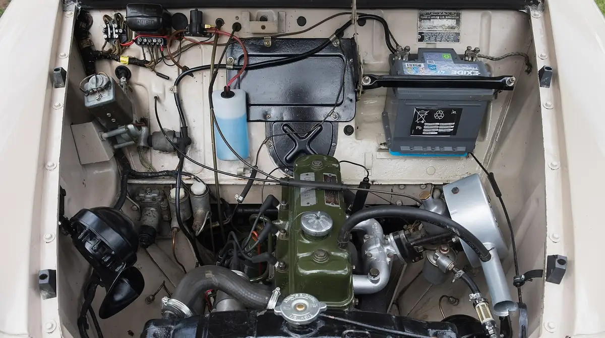

OEM vs Aftermarket Car Parts: How to Choose

OEM parts are made to the vehicle maker's specification, and dealers usually sell them. Aftermarket parts come from other manufacturers and range from basic replacements to certified crash parts. Neither group is better in every case. The right choice depends on the part, the repair and your budget. Match any part by OEM number and VIN, then read the store's return terms.
OEM and aftermarket compared
| Feature | OEM | Aftermarket |
|---|---|---|
| Maker | The automaker or the supplier named by the automaker | Other manufacturers, including budget and premium brands |
| Where sold | Dealers and some online stores | Online stores, chains, specialists and marketplaces |
| Price | Often higher than online options, according to a Capital One guide | Varies by brand and part, so compare totals |
| Fit | Designed by the automaker for the vehicle | Varies, so check the part number |
| Certification | Not applicable | Some crash parts are certified by CAPA or NSF, many are not |
| Before buying | Confirm the OEM number | Confirm fitment and return terms |
CAPA and NSF certification
CAPA, the Certified Automotive Parts Association, was established in 1987 to oversee a testing program for automotive replacement parts. It certifies aftermarket crash parts such as fenders, hoods and lighting. NSF International runs a certification program for aftermarket collision parts. Not every aftermarket part is certified. CAPA has warned that some online sellers falsely label parts as CAPA certified, so verify the part in the CAPA database before you pay.
How to match a part by number
The OEM part number identifies the exact original part. It is usually printed on the old part or listed in a dealer catalog.
Searching a store by that number avoids guesses based on model name alone.
A VIN decoder gives the vehicle's year, make, model and engine, which narrows the catalog before you search.
Compare the number you found with the number on the product page. If the numbers differ, ask the store whether the part is a supersession or a replacement for the original. A supersession means the maker replaced the old number with a new one for the same part.
Keep a photo of the old part and its label before you remove it, so you can compare it with the new part when it arrives.
Fitment tools
Some marketplaces offer fitment checkers. Amazon's Confirmed Fit tool checks a part against your vehicle's year, make, model, drivetrain and engine type. eBay's My Garage feature does the same for vehicle details you enter. AutoZone offers a VIN decoder. Both are fitment aids from the marketplace, not from the automaker. These tools help, but confirm the OEM number as well, and read the seller's return terms before you pay.
Frequently asked questions
Are aftermarket parts as good as OEM parts?
It depends on the manufacturer and the part. Some aftermarket crash parts are certified by CAPA or NSF, while many aftermarket parts are not certified. Compare the maker, the certification where it exists, and the store's return terms before you choose between OEM and aftermarket.
Why are dealer OEM parts often more expensive?
A Capital One guide says dealers usually sell OEM parts, which the automaker designed, and that they often cost more than online options. The tradeoff is confidence that the part fits and performs as intended. Compare the total price including shipping and any duties.
How do I check that a part fits my car?
Use your VIN to confirm year, make, model and engine, then search by the OEM part number. Compare the number on the product page with the number on the old part. Marketplaces also offer tools such as Confirmed Fit and My Garage, which help but do not replace the part number check.
Does CAPA certify every aftermarket part?
No. CAPA certifies specific crash parts under its standards, and not all aftermarket parts are certified. Look for the CAPA seal and verify the part in the CAPA database, because CAPA has warned that some online sellers falsely label parts as certified.
Sources
Checked 18 November 2026: CAPA overview, CAPA warning, Repairer Driven News, Capital One guide, Cars245 FAQ. CAPA gives 1987 as its founding year. Marketplace fitment tools are described in the Capital One guide.